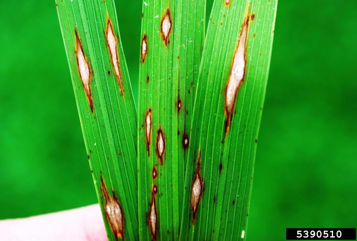
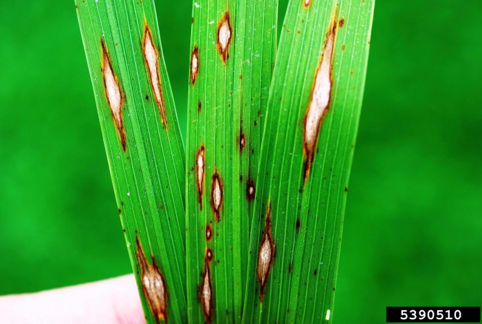

Enter Weekly Weather & Disease Data
Rice Crop Images
 


Meet the Team
Dr. Amoghavarsha Chittargi
BSc. MSc. PhD. | Assistant Professor and Scientist
Plant Pathologist specializing in rice blast disease modeling and field trials.
Vinayak Siddhanti
Data scientist working on weather-based disease prediction systems and AI integration.
Mr. Virat Kohli
Agronomist focusing on crop management practices and extension advisory services.